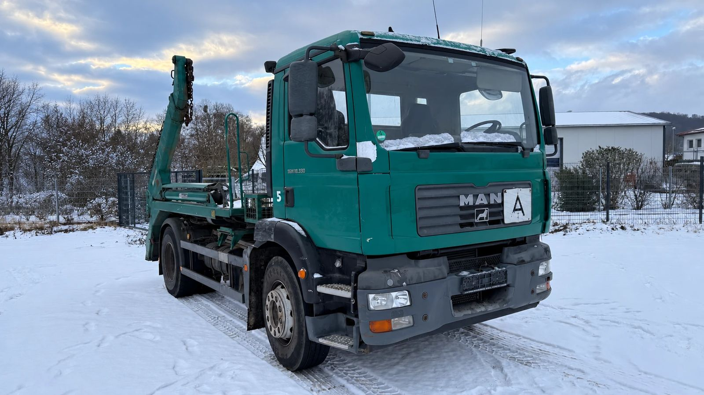
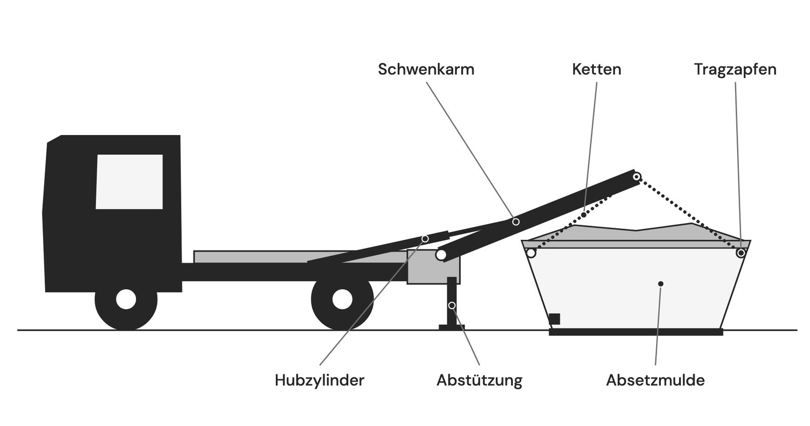
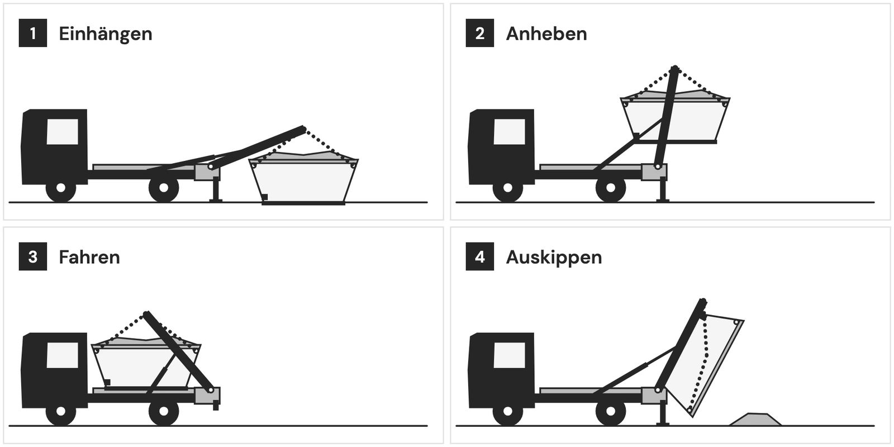

Wer seinen Keller entrümpelt oder ein Bad umbaut, bestellt meist einen Container. Gebracht wird er in vielen Fällen von einem Absetzkipper: einem LKW mit zwei Schwenkarmen, der die Mulde an Ketten anhebt und genau dort absetzt, wo sie gebraucht wird.
In diesem Beitrag erklären wir mit einer Schnittgrafik, wie ein Absetzkipper aufgebaut ist und arbeitet, welche Absetzmulden es gibt, was ihn vom Abrollkipper unterscheidet und worauf es beim Kauf und Verkauf eines gebrauchten Absetzkippers ankommt.
Was ist ein Absetzkipper?
Ein Absetzkipper ist ein LKW mit zwei hydraulisch schwenkbaren Armen, die links und rechts am Fahrzeugheck sitzen. An den Spitzen der Arme hängen Ketten, die in die Zapfen der Absetzmulde eingehängt werden. Schwenken die Arme, hebt sich die Mulde und kann auf den LKW geladen, an anderer Stelle abgesetzt oder ausgekippt werden.
Absetzkipper sind das typische Fahrzeug von Containerdiensten, Entsorgern und Bauhöfen. Meist fahren sie auf zweiachsigen Fahrgestellen. Sie sind kompakter als Abrollkipper und kommen auch in enge Einfahrten und Wohnstraßen.
Im Alltag heißt der Behälter Mulde, Absetzmulde oder Absetzcontainer. Der Begriff Muldenkipper ist dagegen mehrdeutig, so heißen auch große Dumper im Erdbau.
Der Aufbau im Schnitt

Die wichtigsten Teile:
- Schwenkarme: zwei Arme, links und rechts, die sich um einen Drehpunkt am Fahrzeugheck drehen. Viele sind teleskopierbar, damit sie weiter nach hinten reichen.
- Hubzylinder: große Hydraulikzylinder, die vom Grundrahmen zu den Armen laufen und sie schwenken.
- Ketten: hängen an den Armspitzen und werden in die Zapfen der Mulde eingehängt.
- Tragzapfen und Kipplager: Die Mulde hat oben Zapfen zum Anheben und unten Kipplager zum Auskippen.
- Abstützung: hydraulische Stützen am Heck. Sie stehen beim Heben auf dem Boden und verhindern, dass das Fahrzeug nach hinten kippt oder die Hinterachse überlastet wird.
- Grundrahmen: trägt den Aufbau und verteilt die Kräfte auf das Fahrgestell.
Wie viel ein Absetzkipper heben kann, hängt stark davon ab, wie weit die Mulde hinter dem Fahrzeug steht. Meiller gibt für seinen Absetzkipper AK 16 bis zu 18 Tonnen Hublast bei 3,1 m Ausladung an, bei 4,5 m Ausladung mit ausgefahrenen Teleskoparmen noch bis zu 11 Tonnen. Außerdem kann er eine Mulde aus bis zu 80 cm unter Fahrbahnniveau aufnehmen, etwa aus einer Grube (Meiller).
So funktioniert ein Absetzkipper

- Abstützen und einhängen: Der Fahrer setzt rückwärts an die Mulde, fährt die Stützen aus und schwenkt die Arme nach hinten. Dann hängt er die Ketten in die Tragzapfen.
- Anheben: Die Hubzylinder schwenken die Arme nach oben. Die Mulde hängt frei an den Ketten und pendelt unter den Armspitzen.
- Fahren: Die Arme schwenken weiter nach vorn, bis die Mulde auf dem Aufbau steht. Die Stützen fahren ein, die Mulde wird gesichert. Ist sie offen und beladen, gehört ein Netz oder eine Plane darüber, damit nichts herausfliegt.
- Auskippen: Zum Entleeren werden Ketten in die Kipplager unten an der Mulde eingehängt. Schwenken die Arme nun nach hinten, dreht sich die Mulde und kippt ihren Inhalt hinter dem Fahrzeug aus.
Absetzmulden nach DIN 30720
Auch Absetzmulden sind genormt, damit sie zu jedem Absetzkipper passen. Die DIN 30720 Teil 1 regelt Mulden bis 10 m³, Teil 2 die großen Mulden mit 15 und 20 m³ (DIN Media, DIN Media).
In der Praxis gibt es vor allem:
- kleine Mulden von etwa 5 bis 7 m³, zum Beispiel für Bauschutt, der schnell schwer wird
- mittlere Mulden um 10 m³ für gemischte Baustellenabfälle und Sperrmüll
- große Mulden mit 15 bis 20 m³ für leichte, sperrige Abfälle wie Holz oder Grünschnitt
- Deckelmulden, die man abschließen kann, und Mulden mit Klappe
- Pressbehälter, die ebenfalls mit dem Absetzkipper transportiert werden
Wichtig: Das Volumen ist nicht das Gewicht. Eine volle Mulde mit Bauschutt ist schnell schwerer, als Fahrgestell und Aufbau erlauben. Deshalb sind Bauschutt-Mulden meist kleiner.
Absetzkipper oder Abrollkipper?
Beide holen Container ab, aber sie arbeiten ganz unterschiedlich:
- Absetzkipper: hebt die Mulde an Ketten mit zwei Schwenkarmen. Mulden bis etwa 20 m³, kompaktes Fahrzeug, wenig Platz nötig. Typisch für Containerdienste im Wohngebiet.
- Abrollkipper: zieht einen Abrollbehälter mit einem Hakenarm auf den LKW. Deutlich größere Behälter, meist drei- oder vierachsige Fahrgestelle, oft mit Anhänger. Typisch für Gewerbe, Industrie und Wertstoffhöfe.
Die beiden Behälterarten sind nicht untereinander austauschbar. Wie der Abrollkipper im Detail funktioniert, zeigen wir in unserem Beitrag Abrollkipper: Aufbau und Funktion. Einen Überblick über alle Kipper-Arten gibt Kipper-LKW: Arten und Aufbauten.
Worauf beim Kauf eines gebrauchten Absetzkippers achten?
Wie beim Abrollkipper prüft man Fahrgestell und Aufbau getrennt. Am Aufbau zählen vor allem:
- Hersteller, Typ und Baujahr des Aufbaus, zu finden auf dem Typenschild
- starre oder teleskopierbare Arme, denn die Teleskoparme erweitern die Reichweite
- die Hydraulik: Dichtheit der Zylinder, Zustand der Schläuche, Ölverlust
- Spiel in den Lagern der Arme und Zylinder
- die Ketten: Kettenglieder und Haken verschleißen und müssen regelmäßig geprüft werden
- die Abstützung: fährt sie sauber aus und ein, hält sie die Last?
- Prüfnachweise: ein vollständiges Prüfbuch für Aufbau und Ketten
Beim Fahrgestell geht es wie bei jedem LKW um Laufleistung, Schadstoffklasse und den Zustand von Rahmen und Antrieb.

Was ist ein gebrauchter Absetzkipper heute wert?
Oft weniger, als Verkäufer erwarten. Diese Punkte drücken den Preis:
- Ein harter Einsatz. Ein Absetzkipper hebt täglich viele Mulden, fährt Kurzstrecke und steht auf Baustellen. Das sieht man Aufbau und Fahrgestell an.
- Der Aufbau ist ein Verschleißteil. Lager, Zylinder und Ketten nutzen sich mit jedem Hub ab.
- Ein kleiner Käuferkreis. Ein Absetzkipper ist für einen Containerdienst wertvoll, für einen Baubetrieb ohne Mulden kaum.
- Maut und Umweltzonen. Ältere Fahrzeuge mit niedriger Euro-Norm kosten mehr Maut und dürfen nicht in jede Stadt. Für Containerdienste, die viel in Innenstädten fahren, ist das ein Ausschlusskriterium.
- Inseratspreise sind keine Verkaufspreise. Was in Online-Börsen steht, wird nach der Verhandlung selten erzielt.
Ein Verkauf lohnt sich trotzdem fast immer. Ein Absetzkipper, der nur noch auf dem Hof steht, kostet Steuer, Versicherung und Prüfungen und verliert weiter an Wert.
Wir kaufen Absetzkipper an
Die ECS Exclusive Commerce Services GmbH aus der Region Hannover kauft gebrauchte Absetzkipper aller Marken an, mit oder ohne Mulden, einzeln oder als ganzen Fuhrpark. Weitere Fahrzeuge, die wir ankaufen, finden Sie unter Bau- und Kommunalfahrzeuge verkaufen und LKW verkaufen. Weil wir Nutzfahrzeuge auch exportieren, finden wir oft auch für ältere Baujahre einen Abnehmer.
So läuft es ab:
- Sie rufen uns an, schreiben uns per WhatsApp oder senden uns eine E-Mail.
- Sie nennen uns Fahrgestell, Erstzulassung, Kilometerstand sowie Hersteller und Typ des Aufbaus und schicken ein paar Fotos, gern auch vom Typenschild.
- Wir machen Ihnen ein konkretes Angebot.
- Nach Ihrer Zusage erstellen wir den Kaufvertrag und schließen das Geschäft ab.
- Wir holen das Fahrzeug ab, deutschlandweit.
Mehr zum Ablauf lesen Sie unter Unsere Arbeit. Sie möchten Ihren Absetzkipper verkaufen? Schreiben Sie uns oder rufen Sie an.
Hinweis: Dieser Beitrag dient der allgemeinen Information und ersetzt keine Rechts- oder Steuerberatung. Alle Angaben ohne Gewähr, Stand: 22. November 2026. Genannte Marken und Modellbezeichnungen gehören ihren jeweiligen Inhabern. Die ECS GmbH ist ein unabhängiger Händler und steht in keiner Verbindung zu den Herstellern.